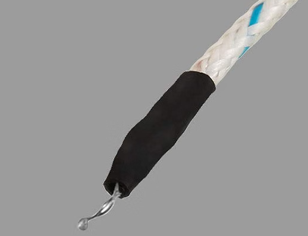
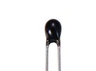
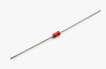
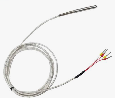
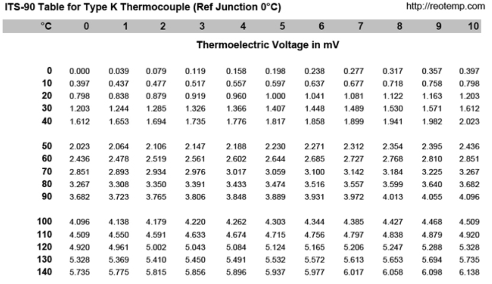

Show all work where applicable, make it neat and readable.
You will be graded on proper significant figures (sig figs) for all answers.
id sensor types, look/uses
measure raw uncalibrated signal (R or mV) from each
convert raw reading to temp via calc
2-wire vs 4-wire RTD, lead resistance error
Negative Temperature Coefficient (NTC) Thermistor
Positive Temperature Coefficient (PTC) Thermistor
Thermocouple (TC) - Type K
Resistance Temperature Detector (RTD)
Crenova MS8233D DMM
DC Power Supply
Oscilloscope
Soldering Iron
Two 10 Ω Resistors
Temperature measurement is an important part of monitoring electro-mechanical systems. With a wide range of application for temperature measurement comes a wide range of temperature sensors to achieve different needs.
In today's lab, we will introduce common temperature sensors and look at how to convert their electrical measurement quantities to an actual temperature value.
There are other measurement techniques, including non-contact methods like Infrared (IR), but they are out of scope for this class.

Thermocouple

NTC Thermistor

PTC Thermistor

RTD
Let's start with the Thermocouple (TC). Thermocouples are very common in consumer and industrial electronics, especially for high temperature applications.
TCs are known for their extreme temperature range and fast response time. They are also typically better for harsh environments. TCs output a small voltage, in the 10s of millivolts range.
Use your DMM to measure the voltage of your TC at ambient (room temperature).
TC Ambient Voltage VTC (ambient) =
Using your DMM's datasheet DC voltage accuracy spec below, calculate the measurement uncertainty on the ambient reading above.
| Range | Resolution | Accuracy |
|---|
| 200mV | 0.1mV | ± (0.5% rdg + 2dgt) |
MS8233D DC Voltage spec.
Uncertainty ±
Range to
Pinch the thermocouple between your fingers for a few seconds while reading with DMM. Record the peak voltage that the TC rises to.
It will begin to level off and then fall back down once you let go of it.
TC Warm Voltage VTC (warm) =
Now we will convert the voltages measured to temperatures. We will start with lookup table conversion.
Round your voltages measured to the closest °C in the lookup table provided in Appendix A.
TC Ambient Temperature TTC (ambient) =
TC Warm Temperature TTC (warm) =
Now we will convert with one more digit using a linear interpolation. Use this formula to compute with 0.1 °C precision.
T1 ,
T2 ,
V1 ,
V2
are the two points around your measurement V.
T = T1 + (V − V1) ×
T2 − T1
V2 − V1
Interpolation formula.
TC Ambient Temperature TTC (ambient) =
TC Warm Temperature TTC (warm) =
Now let's hook up the TC to an oscilloscope. Using a 10:1 probe, connect the TC so that it is measuring a positive voltage.
Set your time divisions so it captures a few seconds of TC behavior.
Capture the behavior of the TC for one cycle of pinching to warm it, and releasing to cool it.
Draw the general shape of your curve below, include only basic details – I'm looking for general curve shape.
Heat-up/cool-down cycle with fingers.
Let's provide some control feedback to the TC. Attempt to hold the TC at a steady constant voltage above ambient, say 1 mV (25 °C) using your fingers.
Are you able to do this? If so, draw your general cycle behavior curve here – again just looking for general shape.
Feedback control with fingers.
Heat up your thermocouple with the hot air tool. Draw your curve shapes below.
Use the left box for general heat-up/cool-down cycle curve shape.
Use the right box for attempting to hold with control feedback at 5 mV (122 °C).
Heat-up/cool-down cycle with hot air.
Feedback control cycle with hot air.
The next sensor type is a Negative Temperature Coefficient (NTC) Thermistor.
Instead of measuring a voltage which corresponds to a temperature, thermistors are instead a variable resistor that changes with temperature.
Although NTC Thermistors are generally the cheapest temperature sensors, they can still be quite accurate when used correctly.
Use your DMM to measure your NTC thermistor's ambient resistance.
It should be about 10 kΩ.
NTC Thermistor Ambient Resistance RNTC (ambient) =
Using your DMM's datasheet resistance accuracy spec below, calculate the measurement uncertainty on the ambient reading above.
| Range | Resolution | Accuracy |
|---|
| 20kΩ | 0.01kΩ | ± (0.8% rdg + 2dgt) |
MS8233D Resistance spec.
Uncertainty ±
Range to
Pinch the NTC thermistor between your fingers for a few seconds while reading with DMM. Since NTC resistance decreases as temperature rises, record the minimum resistance it falls to.
It will begin to level off and then rise back up once you let go of it.
NTC Thermistor Warm Resistance RNTC (warm) =
Now we'll convert to temperature using the Beta parameter equation.
R0 and T0 are the thermistor's reference resistance and temperature, and β is its Beta value — all given on the datasheet.
R0 = 10 kΩ, T0 = 25°C, β = 3950 K
T =
1
1/T0 + (1/β) ln(R/R0)
− 273.15
Beta parameter equation (T, T0 in Kelvin; subtract 273.15 for °C)
NTC Ambient Temperature TNTC (ambient) =
NTC Warm Temperature TNTC (warm) =
What happens when you hook up the NTC thermistor to the oscilloscope? Why?
A Positive Temperature Coefficient (PTC) Thermistor operates very similar to a NTC thermistor, but with the opposite slope for temperature change.
Let's just take two measurements of the PTC thermistor at ambient and warm via fingers.
This time you should measure something around 300 Ω.
PTC Thermistor Ambient Resistance RPTC (ambient) =
PTC Thermistor Warm Resistance RPTC (warm) =
Describe the resistance of the PTC thermistor as temperature increases.
The next step requires you to pay attention to your Ammeter at the moment you provide power to the circuit.
Hook up your PTC thermistor like in the circuit below, use the mA range. Record values below.
PTC current measurement circuit.
PTC Thermistor Current, Initially IPTC (initial) =
PTC Thermistor Current, Steady State IPTC (steady) =
What happens to the current over time? How long does it take to change?
Using your initial current, calculate how much power is dissipated in the PTC thermistor.
Assume the Ammeter is ideal i.e. 0 Ω internal resistance.
PTC Thermistor Power, Initially PPTC (initial) =
This is a common configuration for a PTC in a circuit. Why do you think this might be useful?
The final sensor is a Resistance Temperature Detector (RTD).
An RTD is very similar to a thermistor, but it typically is used for applications with the most required precision.
For these measurements, we will experiment with using more than 2 leads for more accurate measurements, which is common in this area.
Configure your DC Power Supply as a current source by following these steps:
Push the CUR-ADJ CC/CV button so the green LED is ON.
Set the output to 1 Volt.
Short the + and - outputs together with a banana plug.
Push the CUR-ADJ DOWN button until the output reads 0.01 Amps.
Remove the short.
We will be using small resistances to simulate a long cable connection from the measurement circuitry to the RTD.
There are many applications which could have 20+ feet of wire to an RTD sensor.
Configure your circuit according to the digram below.
alpha linear approx -> temp (Pt100, α=0.00385 TODO confirm part)
polynomial calc -> temp (coefficients TODO)
TODO RTD lead resistance error, 2-wire w/ series R vs true 4-wire
2-wire + 10Ω series R inserted, measured R
true 4-wire, measured R
error between the two
